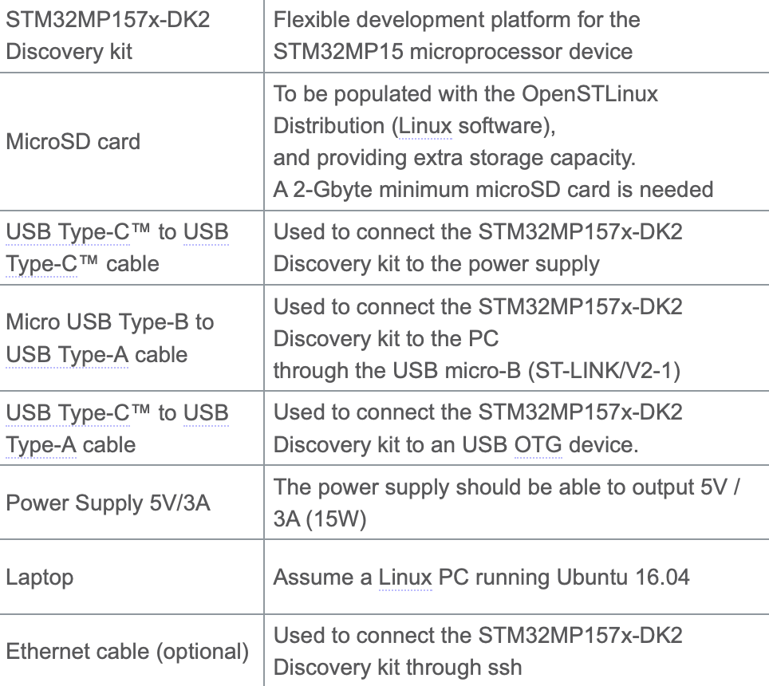
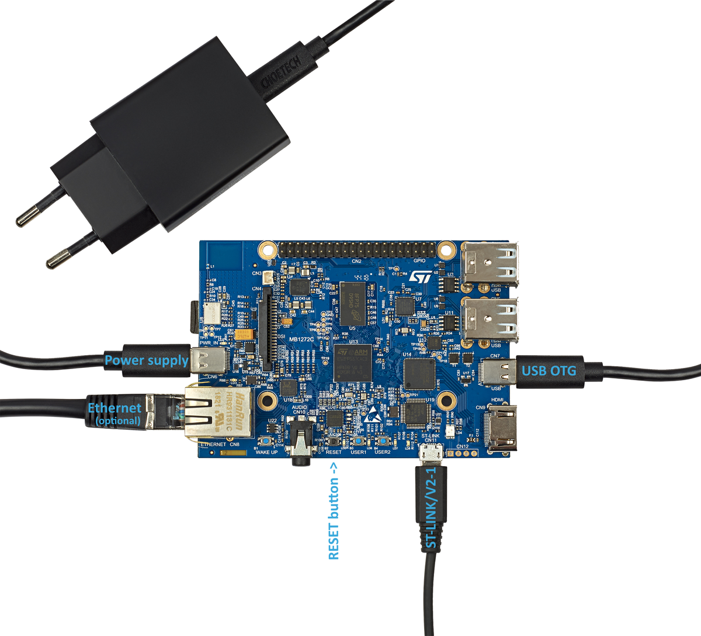
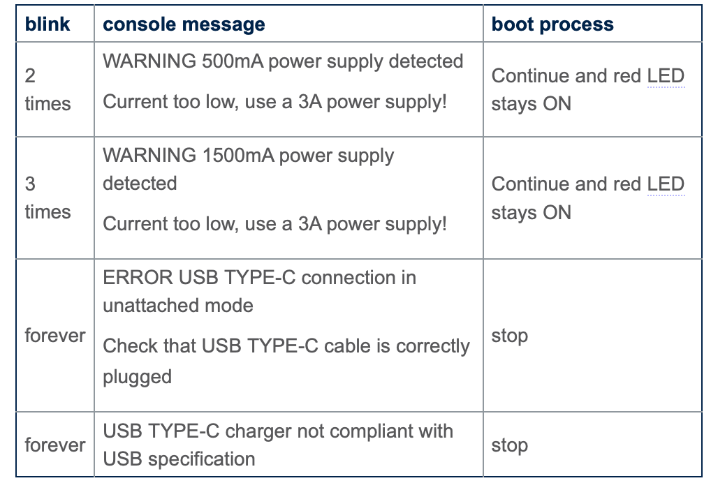

Getting started with STM32MP157CDK-2
Required Equipment
The following table lists the required equipment to start playing with your STM32MP157C-DK2 board.

Connection
- Connect the micro USB Type-B to USB Type-A cable between your laptop and the ST-LINK/V2-1 port of the board
- Connect the USB Type-C™ to USB Type-C™ cable to the 5V/3A power supply
- Connect the USB Type-C™ to USB Type-A cable betweenn your laptop and the USB Type-C™ OTG port of the board
- Optionally connect the Ethernet cable between your Ethernet network and the Ethernet port of the board

- If the board power supply doesn't supply enough current (3A), the red LED indicates the issue following the rules below:

Execute Basic Commands
This stage explains how to connect the Linux® terminal of your board to your host computer through the ST-LINK/V2-1. Then you will see how to execute basic commands with the Linux command line interface in order to be familiarized with the Linux console.
The Serial Terminal
The serial terminal allows to communicate with the board trough a UART serial interface.
- On Mac/Linux install minicom by running the following commands respectively
$ sudo apt-get install minicomfor Linux.
$ brew install minicomfor Mac.
For Mac
- Get the port on which the device is connected by running the following command
$ ls /dev/tty* and in my case the port is /dev/tty.usbmodem142202
For Linux
- Get the port on which the device is connected by running the following command
$ ls /dev/ttyACM* and you should get the following output /dev/ttyACM0
Tip
Run the command again by disconnecting the dev board from the host computer and notice which port is not listed. The missing port ID is your desired port ID.
- Connect minicom to the minicom -D /dev/ttyACM0 device by running the following command:
for Macminicom -D /dev/tty.usbmodem142202and for Linuxminicom -D /dev/ttyACM0
The output screen will be as follows:
$ minicom -D /dev/ttyACM0
Welcome to minicom 2.7.1
OPTIONS: I18n
Compiled on Nov 15 2018, 20:18:47.
Port /dev/ttyACM0, 15:56:03
Press CTRL-A Z for help on special keys
- Press the reset button to reset the board. You should see boot log displayed in the minicom window in your host computer.
Connect using SSH
-
This feature works only if the ethernet cable is connected to the board.
-
Determine the board's IP Address by running the following command in board using the serial terminal
$ ip addr show eth0 -
The following code is displayed in your serial terminal.
3: eth0: <BROADCAST,MULTICAST,UP,LOWER_UP> mtu 1500 qdisc mq state UP group default qlen 1000 link/ether xx:xx:xx:xx:xx:xx brd ff:ff:ff:ff:ff:ff inet xx.xx.xx.xx/xx brd xx.xx.xx.xx scope global dynamic eth0 valid_lft 159045sec preferred_lft 159045sec inet6 xxxx::xx:xx:xx:xx/64 scope link valid_lft forever preferred_lft forever
inet xx.xx.xx.xx/xx is your board's IP address.
- On the host computer connect the terminal to the board using ssh
$ ssh root@xx.xx.xx.xx root@stm32mp1:~#
Basic Commands
Printing distribution specific information
$ cat /etc/build
-----------------------
Build Configuration: |
-----------------------
BB_VERSION = 1.46.0
BUILD_SYS = x86_64-linux
NATIVELSBSTRING = universal
TARGET_SYS = arm-ostl-linux-gnueabi
MACHINE = stm32mp1
DISTRO = openstlinux-weston
DISTRO_VERSION = 3.1-openstlinux-5.10-dunfell-mp1-21-03-31
TUNE_FEATURES = arm vfp cortexa7 neon vfpv4 thumb callconvention-hard
TARGET_FPU = hard
MANIFESTVERSION = ostl-21-03-31-rc4-2-g7ef7d27
DISTRO_CODENAME = dunfell
ACCEPT_EULA_stm32mp1 = 1
GCCVERSION = 9.%
PREFERRED_PROVIDER_virtual/kernel = linux-stm32mp
PREFERRED_VERSION_linux-stm32mp =
-----------------------
Layer Revisions: |
-----------------------
meta-python = default.xml:5bba79488b7d393d2258d6e917f7bf7b0d7c4073
meta-oe = default.xml:5bba79488b7d393d2258d6e917f7bf7b0d7c4073
meta-gnome = default.xml:5bba79488b7d393d2258d6e917f7bf7b0d7c4073
meta-initramfs = default.xml:5bba79488b7d393d2258d6e917f7bf7b0d7c4073
meta-multimedia = default.xml:5bba79488b7d393d2258d6e917f7bf7b0d7c4073
meta-networking = default.xml:5bba79488b7d393d2258d6e917f7bf7b0d7c4073
meta-webserver = default.xml:5bba79488b7d393d2258d6e917f7bf7b0d7c4073
meta-filesystems = default.xml:5bba79488b7d393d2258d6e917f7bf7b0d7c4073
meta-perl = default.xml:5bba79488b7d393d2258d6e917f7bf7b0d7c4073
meta-st-stm32mp = default.xml:2e80e33539a193c6a8add6131c4c760009c49cea
meta-qt5 = default.xml:0d8eb956015acdea7e77cd6672d08dce18061510
meta-st-openstlinux = default.xml:673d7ee4572e3faadec3e43d5f0fa004465b78d9
meta = default.xml:72431ee8de5e3a53d259cebf420a7713ac9e1f14
Printing System Information
$ uname -a
Linux stm32mp1 5.10.10 #1 SMP PREEMPT Sat Jan 23 15:04:06 UTC 2021 armv7l armv7l armv7l GNU/Linux
Printing Linux Kernal and GCC versions
$ cat /proc/version
Linux version 5.10.10 (oe-user@oe-host) (arm-ostl-linux-gnueabi-gcc (GCC) 9.3.0, GNU ld (GNU Binutils) 2.34.0.20200220) #1 SMP PREEMPT Sat Jan 23 15:04:06 UTC 2021
Printing the amount of disk space available on all mounted file systems
$ df -h
Filesystem Size Used Avail Use% Mounted on
devtmpfs 147M 0 147M 0% /dev
/dev/mmcblk0p6 690M 424M 220M 66% /
tmpfs 214M 64K 214M 1% /dev/shm
tmpfs 214M 8.8M 205M 5% /run
tmpfs 214M 0 214M 0% /sys/fs/cgroup
tmpfs 214M 20K 214M 1% /tmp
/dev/mmcblk0p4 58M 14M 40M 27% /boot
/dev/mmcblk0p5 15M 6.8M 6.7M 51% /vendor
tmpfs 214M 144K 214M 1% /var/volatile
/dev/mmcblk0p7 28G 38M 26G 1% /usr/local
tmpfs 43M 0 43M 0% /run/user/0